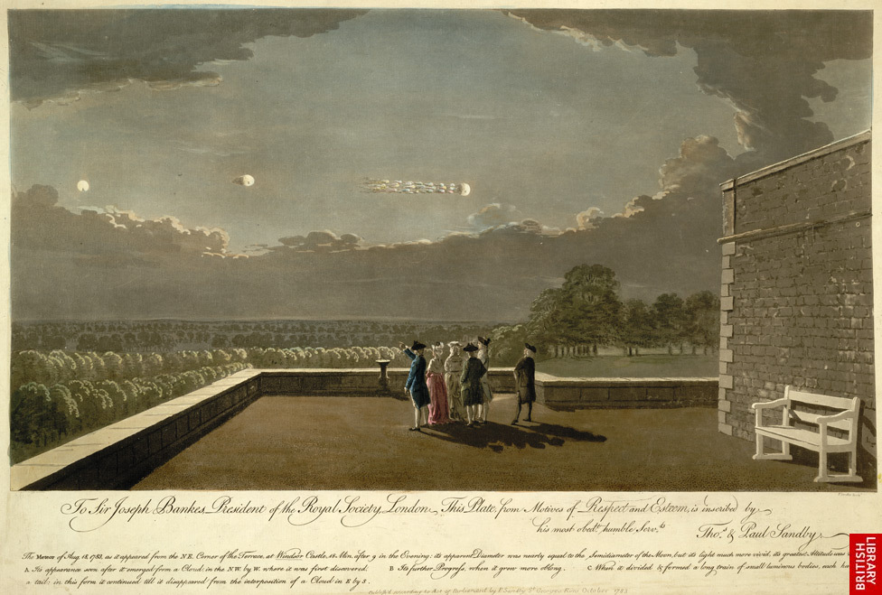

William Herschel observe un point brillant vu dans
l'obscurité de la Lune... qui vu dans le
télescope ressemblait à une étoile de la 4ᵉ magnitude telle qu'elle apparaît à l'œil nuPhilosophical Transactions (Volume LXXVII) for
1787 < Lowes, 1927 < Rosenberg, Samuel : "'Ancient' UFO Reports", "UFOs in History", Scientific Study of Unidentified Flying Objects, 1969.
Aux environs de Montpellier, pluie de grêlons
faisant pour la majorité 1 pouce de diamètre, certains 2 pouces et d'autres un poids de 2 livres Mourgue, Académie des Sciences, 1781, p. 755 < Silliman Journal, 2, 335 <
Roche, Edouard : Recherches sur les offuscations du soleil et les météores cosmiques, 1868, p. 75
< Deliyannis, Yannis : "On "viscous meteorites", Magonia Exchange, dimanche 14 octobre 2007.
Illustration de l'observation du 18 août selon les indications de Thomas Sandby, un fondateur de l'Académie
Royale, et son frère Paul, tous 2 témoins de l'événement Sandby, Paul: Aquarelle 35,3 x 52,8 cm, St George's Row; Octobre 1783 < "The
Meteor of Aug 18, 1783, as it appeared from the NE Corner of the Terrace at Windsor Castle...etc", British Library

À Saint George's Fields, Newington, Lamberth et les parties adjacentes, des centaines de personnes voient un
globe de feu pellucide, apparemment de 6 pouces de diamètre environ, fut vu s'élever du Thames, ou des terrains
au-delà de Millbank, sa course était en ligne droite vers les Green-Fields près du péage de Kennington. Il émit
une lumière égale à celle de la pleine Lune,
et en passant au-dessus de la route qui mène de St. George's Fields à Vauxhall se sépara en plusieurs parties,
dont certains formèrent de petits globes de la taille d'une tasse à thé, d'autres étaient oblongs, apparemment
aussi gros qu'une navette de tisserand, qui se suivaient tous dans en ligne directe, toujours, après un espace
d'environ 3 mn, ils s'évanouirent au-dessus des terrains au-delà de Kennington sans bruit ni fumée. Vers la même
heure le phénomène semblable fut observé dans la métropole : un large trait de lumière fonça, tel qu'il était, à
travers l'atmosphère, et attira l'attention de tous les passagers. Nous attendons d'avoir l'explication de la
cause et la nature de ces apparitions des instruitsThe Edinburgh Advertiser, Midlothian, Ecosse, samedi 22 août 1783 < Guenther, D.: Magonia ExchangePlatt, John, World Encyclopedia of Wonders and Curiosities. New York 1880, published by Allen & Wilmarth < Aubeck, C.: Magonia ExchangeAubert, Alexander : "An Account of the
Meteors of the 18th of August and 4th of October, 1783",
Philosophical Transactions of the Royal Society of London (1776-1886), vol. 74, 1784, pp. 112-115"Observations on a Remarkable Meteor Seen on the 18th of August, 1783, Communicated in a Letter to Sir Joseph Banks, Bart. P. R. S. By William Cooper, D. D. F. R. S. Archdeacon of York", Philosophical Transactions of the Royal Society of London (1776-1886),
vol. 74, 1784, pp.
116-117Edgeworth, Richard Lowell: "An Account of the Meteor of the 18th of August, 1783", Philosophical Transactions of the Royal Society of London (1776-1886),
vol. 74, 1784, p.118Cavallo, Tiberius: "Description of a Meteor, Observed Aug. 18, 1783",
Philosophical Transactions of the Royal Society of London (1776-1886), vol. 74 (1784), pp.
108-111.